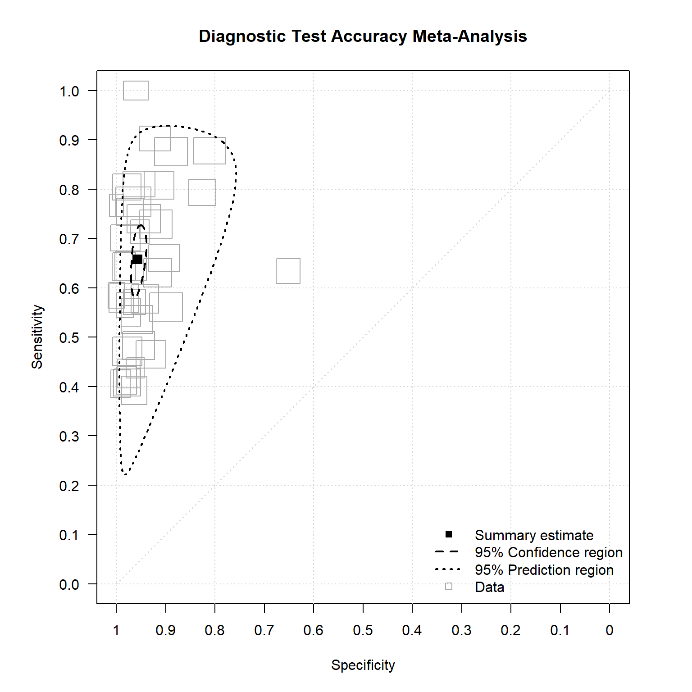
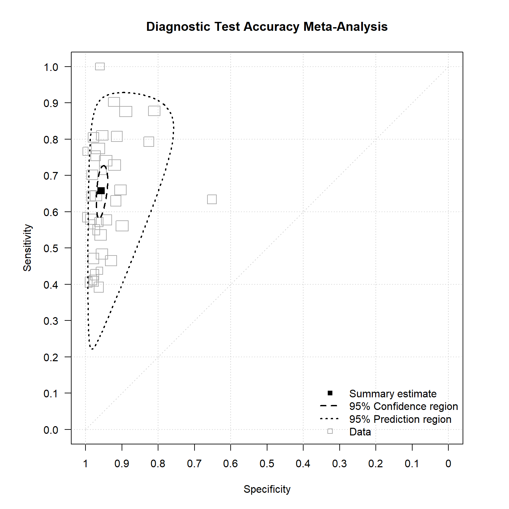
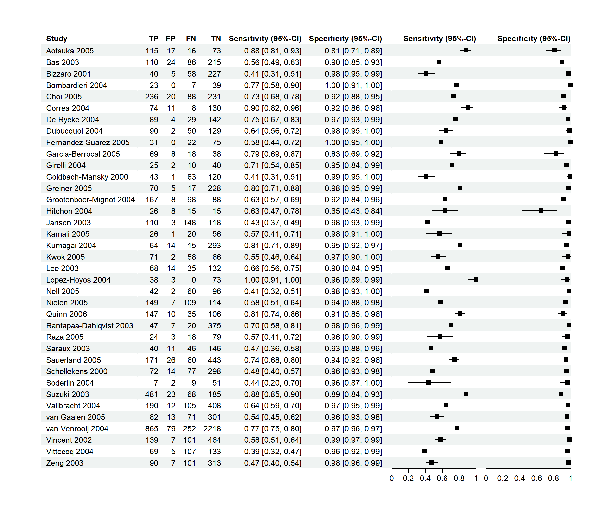
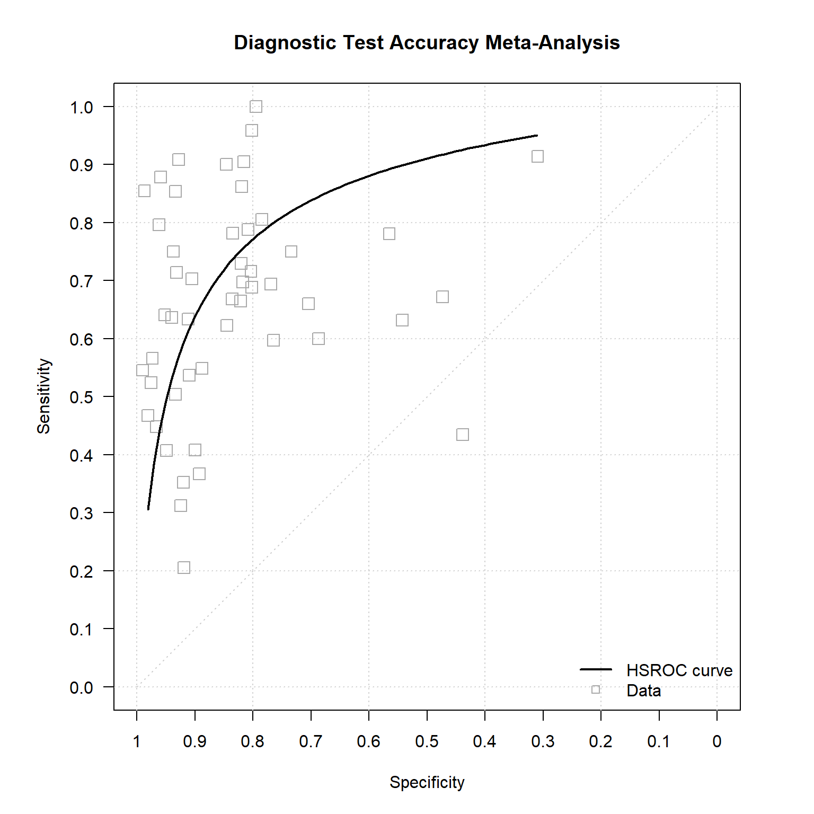
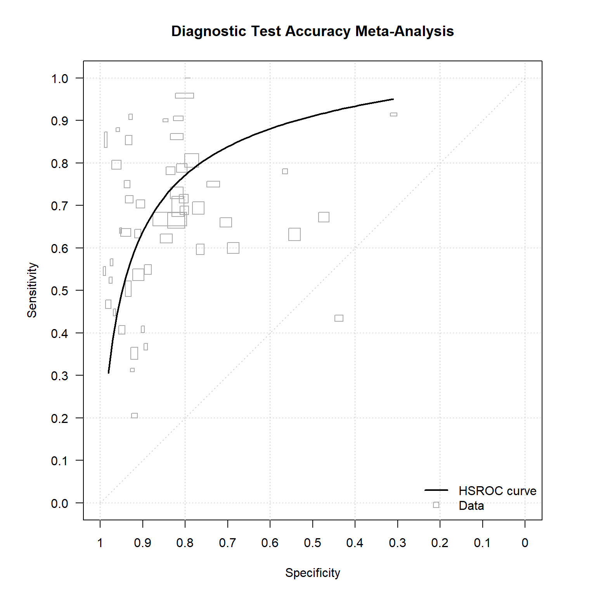
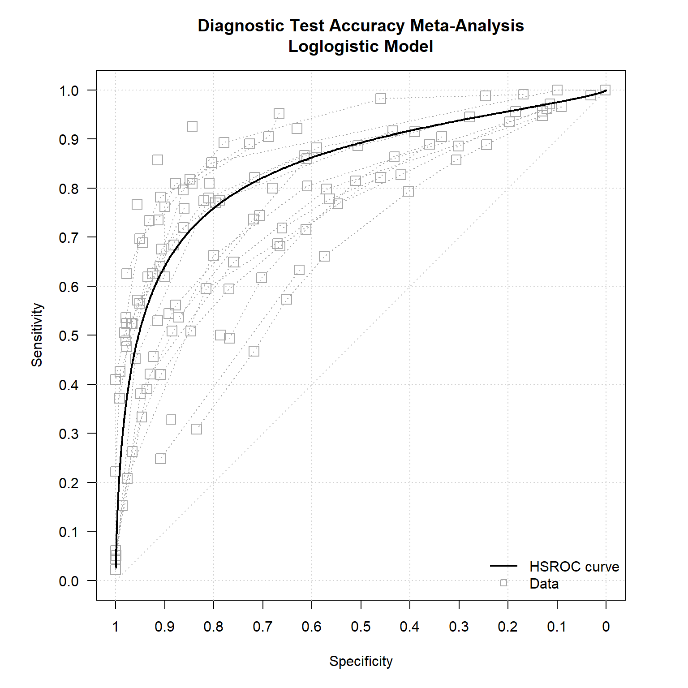
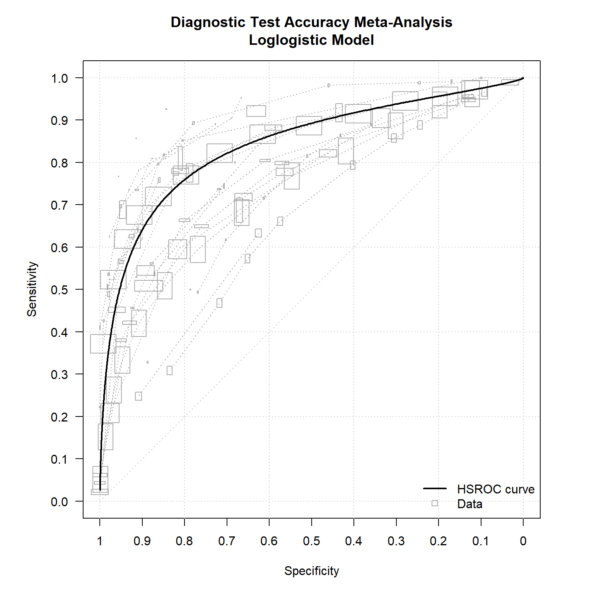
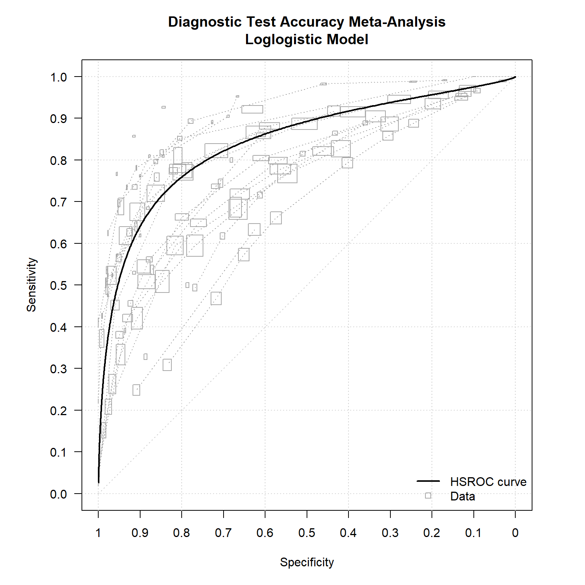
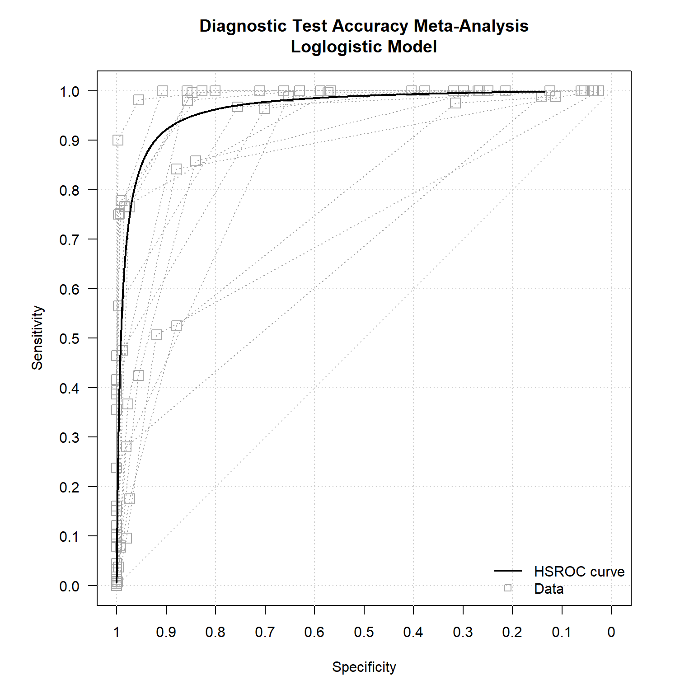

#install.packages("dtametaTMB")
library(dtametaTMB)Introduction to dtametaTMB
This vignette introduces the main functionality of the dtametaTMB package for meta-analysis of diagnostic test accuracy (DTA) studies. We demonstrate how to fit three commonly used models:
- the Reitsma bivariate model
- the Rutter and Gatsonis (HSROC) model
- the Hoyer model for multiple thresholds
using real datasets included in the package.
Note: Rendering forest plots via forest may take longer in an interactive R session due to the underlying grid graphics. Performance is typically faster when knitting the vignette (e.g. via RMarkdown or Quarto).
How do I load the package?
Which model should I use?
- Reitsma model: single threshold per study: use when studies apply similar thresholds.
- HSROC model: single threshold per study: use when thresholds vary between studies or in small and extreme data sets
- Hoyer model: multiple thresholds per study
Validation
The implementations reproduce benchmark results from the Cochrane Handbook for Systematic Reviews of Diagnostic Test Accuracy (including parameter estimates, standard errors, and graphical outputs) for standard datasets such as the Anti‑CCP and RF examples.
How do I use the Reitsma model?
Unlike the mada package, dtametaTMB uses the binomial likelihood to model the within study distribution as recommended by The Cochrane Handbook.
For sensitivity in study \(i\), we have the number of diseased individuals testing positive: \(y_{Ai} \sim \mathcal{B}(n_{Ai},\pi_{Ai})\).
Similarly for specificity, we have the number of non-diseased individuals testing negative: \(y_{Bi} \sim \mathcal{B}(n_{Bi},\pi_{Bi})\).
At the study level, we have
\[ \begin{pmatrix} \operatorname{logit}(\pi_{Ai}) \\ \operatorname{logit}(\pi_{Bi}) \end{pmatrix} = \begin{pmatrix} \mu_{Ai} \\ \mu_{Bi} \end{pmatrix} \sim \mathcal{N} \left( \begin{pmatrix} \mu_A \\ \mu_B \end{pmatrix}, \; \Sigma \right), \quad \text{with} \quad \Sigma = \begin{pmatrix} \sigma_A^2 & \sigma_{AB} \\ \sigma_{AB} & \sigma_B^2 \end{pmatrix}.\]
data("anticcp")
reitsma <- fitReitsma(data=anticcp,
TP=TP,
FP=FP,
FN=FN,
TN=TN,
study=study)
reitsma
#>
#> Reitsma Model
#> -------------
#>
#> Number of studies : 37
#> Model fit : Converged
#> -2 log likelihood : 545.56
#>
#> mu_A (sens) : 0.653
#> mu_B (spec) : 3.109
#>
#> Use summary() for parameter estimates.
summary(reitsma)
#> $estimates
#> Estimate Std_Error
#> mu_A.sens 0.6534029 0.1274866
#> mu_B.spec 3.1089906 0.1458847
#> sigma2_A.sens 0.5426397 0.1463478
#> sigma2_B.spec 0.5717019 0.1873211
#> sigma_AB -0.2704148 0.1198520
#>
#> $sensspec
#> Estimate conflevel CI_Lower CI_Upper
#> sens 0.6577769 0.95 0.5995364 0.7116214
#> spec 0.9572621 0.95 0.9439094 0.9675454
#>
#> $RutterGatsonis_recovered
#> Lambda Theta beta sigma2_alpha sigma2_theta
#> Estimate (recovered) 3.730684 -1.203361 0.02608605 0.573133 0.4136981How do I get a summary plot of the Reitsma model?
plot(reitsma)
plot(reitsma,scale=0.01)
How do I get a coupled forest plot?
Note: Rendering forest plots may take longer in an interactive R session due to the underlying grid graphics. Performance is typically faster when knitting the vignette (e.g. via RMarkdown or Quarto).
forest(reitsma)
How do I use the Rutter and Gatsonis model?
The number of diseased individuals from study \(i\) who test positive is denoted by \(y_{i1} \sim \mathcal{B}(n_{i1},\pi_{i1})\).
Similarly, the number of non-diseased individuals who test positive is \(y_{i2} \sim \mathcal{B}(n_{i2},\pi_{i2})\).
At the study level, we have
\[\operatorname{logit}(\pi_{ij}) = \left( \theta_i + \alpha_i x_{ij} \right) \exp(-\beta x_{ij}), \quad \quad \quad \alpha_i \sim \mathcal{N}(\Lambda, \sigma_\alpha^2), \qquad \theta_i \sim \mathcal{N}(\Theta, \sigma_\theta^2),\]
where \[x_{ij} = \begin{cases} -0.5 & \text{for non-diseased individuals}, \\ \phantom{-}0.5 & \text{for diseased individuals}. \end{cases}\]
data("RF")
ruttergatsonis <- fitRutterGatsonis(data=RF,
TP=TP,
FP=FP,
FN=FN,
TN=TN,
study=study)ruttergatsonis
#>
#> Rutter & Gatsonis Model
#> -----------------------
#>
#> Number of studies : 50
#> Model fit : Converged
#> -2 log likelihood : 806.934
#>
#> Lambda : 2.602
#> Theta : -0.437
#> Beta : 0.227
#>
#> Use summary() for parameter estimates.
summary(ruttergatsonis)
#> $estimates
#> Estimate Std. Error
#> Lambda 2.6015985 0.18616691
#> Theta -0.4370167 0.14685177
#> beta 0.2266849 0.16236992
#> sigma2_alpha 1.3014057 0.30455918
#> sigma2_theta 0.5422965 0.12366256
#> logitsens 0.8286883 0.15539440
#> sens 0.6960775 0.03287424
#>
#> $sensspec
#> spec conflevel logitsens Std_Error CI_Lower CI_Upper Sens
#> 1 0.8669545 0.95 0.8286883 0.1553944 0.5241209 1.133256 0.6960775
#> SensCI_Lower SensCI_Upper
#> 1 0.6281109 0.7564392
#>
#> $Reitsma_recovered
#> mu_A.sens mu_B.spec sigma2_A.sens sigma2_B.spec sigma_AB
#> Estimate (recovered) 0.7712238 1.946381 0.6916646 1.088408 -0.2169451How do I get a summary plot of the Rutter and Gatsonis model?
plot(ruttergatsonis)
plot(ruttergatsonis,size="se",scale=0.01)
How do I get a coupled forest plot?
Note: Rendering forest plots may take longer in an interactive R session due to the underlying grid graphics. Performance is typically faster when knitting the vignette (e.g. via RMarkdown or Quarto).
forest(ruttergatsonis)
How do I use the Hoyer model?
The Hoyer model assumes that the diagnostic test measurement arises from a latent continuous variable \(Y_{j}\), with \(j=0\) for the non-diseased individuals and \(j=1\) for the diseased, which follows a parametric survival distribution. The observed test results correspond to interval-censored observations of this latent variable due to the use of thresholds.
Which distributions does dtametaTMB support?
The latent variable \(Y_{j}\) is assumed to follow a location–scale family:
\[Y_{j} \sim F(\mu_{j}, \phi_j),\]
where:
- \(\mu_j\) is a study-specific location parameter
- \(\phi_j\) is a scale parameter
Common choices for \(F\) include:
Weibull distribution
\[f(y; \mu_j, \phi_j) = \mu_j \phi_j y^{\phi_j - 1} \exp(-\mu_j y^{\phi_j})\]
Log-normal distribution
\[f(y; \mu_j, \phi_j) = \frac{1}{\phi_j y} \phi\!\left(\frac{\log(y) - \mu_j}{\phi_j}\right)\]
Log-logistic distribution
\[f(y; \mu_j, \phi_j) = \frac{\mu_j \phi_j y^{\phi_j - 1}}{\left(1 + \mu_j y^{\phi_j}\right)^2}\]
Random effects structure
To account for between-study heterogeneity and the correlation between diseased and non-diseased groups, we introduce study-specific random effects:
\[\log(y_{0}) = \beta_{0} + \varepsilon_0 + u_{0i}, \quad \log(y_{1}) = \beta_{1} + \varepsilon_1 + u_{1i},\]
with
\[\begin{pmatrix} u_{0i} \\ u_{1i} \end{pmatrix} \sim \mathcal{N} \left( \begin{pmatrix} 0 \\ 0 \end{pmatrix}, \begin{pmatrix} \sigma_0^2 & \rho \sigma_0 \sigma_1 \\ \rho \sigma_0 \sigma_1 & \sigma_1^2 \end{pmatrix} \right).\]
Censoring mechanism
Because only thresholded outcomes (TN,TP,FN,FP) are observed, the latent variable \(Y_{j}\) is subject to censoring.
- Left censoring: \((-\infty,y_k^R]\)
- Interval censoring between adjacent thresholds
- Right censoring: \((y_k^L, +\infty)\)
where \(y_k^L\) and \(y_k^R\) denote finite threshold values.
How do I compute sensitivities and specificities?
We can model the ROC curve by predicting sensitivities and specificities (1 - false positive rates) at several threshold values \(y\).
Weibull distribution
\[S_1(y) = \exp(-(y\,\exp(-\beta_1))^{1/\lambda_1}), \quad \text{with} \quad \beta_1=-\log{(\mu_1}), \quad \lambda_1 = 1/\phi_1,\] \[S_0(y) = \exp(-(y\,\exp(-\beta_0))^{1/\lambda_0}), \quad \text{with} \quad \beta_0=-\log{(\mu_0}), \quad \lambda_0 = 1/\phi_0.\]
Log-normal distribution
\[ S_1(y) = 1-\Phi\left(\frac{1}{\lambda_1} ( \log(y) - \beta_1 ) \right), \quad \text{with} \quad \beta_1=\mu_1, \quad \lambda_1 = \phi_1, \] \[ S_0(y) = 1-\Phi\left(\frac{1}{\lambda_0} ( \log(y) - \beta_0 ) \right), \quad \text{with} \quad \beta_0=\mu_0, \quad \lambda_0 = \phi_0. \]
Log-logistic distribution
\[S_1(y) = 1/\left(1 + \exp(-\beta_1/\lambda_1 )\,y^{1/\lambda_1} \right), \quad \text{with} \quad \beta_1=-\phi^{-1}\log{(\mu_1}), \quad \lambda_1 = 1/\phi_1,\] \[S_0(y) = 1/\left(1 + \exp(-\beta_0/\lambda_0 )\,y^{1/\lambda_0} \right), \quad \text{with} \quad \beta_0=-\phi^{-1}\log{(\mu_0}), \quad \lambda_0 = 1/\phi_0.\]
How do I interpret test direction?
For tests where larger values indicate disease (testdirection = "greater"):
- \(S_1(y)\) corresponds to sensitivity at threshold y
- \(S_0(y)\) corresponds to the false positive rate (FPR) = 1 - specificity
For tests where smaller values indicate disease (testdirection = "less"):
- \(S_1(y)\) corresponds to the false negative rate (FNR) = 1 - sensitivity
- \(S_0(y)\) corresponds to specificity
In a nutshell
By modelling the diagnostic marker as a latent continuous outcome, the Hoyer model:
- naturally accommodates multiple thresholds per study
- provides a unified framework for interval-censored diagnostic data
- preserves the correlation between sensitivity and specificity
The following parameters have to be estimated: \(\beta_{0},\; \beta_{1},\; \lambda_0,\; \lambda_1,\; \sigma_0^2,\; \sigma_1^2,\; \text{and } \rho\), where \(\lambda_0\) and \(\lambda_1\) are transformations of \(\phi_0\) and \(\phi_1\).
To obtain initial values, it is necessary to specify a smallest (<< \(\min y\)) and largest (>> \(\max y\)) value across all studies, essentially replacing negative and positive infinity for the left and right censored intervals.
How do I fit the Hoyer model?
data("diabetes")
head(diabetes)
#> study threshold TP TN FP FN D H originally_published
#> 1 Study 01 5.9 574 1389 682 262 836 2071 1
#> 2 Study 02 5.0 617 1005 7735 18 635 8740 0
#> 3 Study 02 5.1 607 1617 7123 28 635 8740 0
#> 4 Study 02 5.2 600 2438 6302 35 635 8740 0
#> 5 Study 02 5.3 581 3409 5331 54 635 8740 0
#> 6 Study 02 5.4 563 4422 4318 72 635 8740 0
summary(diabetes$threshold)
#> Min. 1st Qu. Median Mean 3rd Qu. Max.
#> 3.900 5.500 5.800 5.837 6.100 7.600The argument eval_threshold specifies the values at which sensitivities and specificities are evaluated after model fitting.
hoyer <- fitHoyer(data=diabetes,
TP=TP,
FP=FP,
FN=FN,
TN=TN,
threshold=threshold,
study=study,
dist="loglogistic",
testdirection="greater",
eval_threshold=c(5.0,5.5,6.0,6.5,7.0,7.5),
smallest=2,
largest=10)hoyer
#>
#> Hoyer Model
#> -----------
#>
#> Number of studies : 38
#> Model fit : Converged
#> -2 log likelihood : 209322
#>
#> Distribution : Loglogistic
#> Test direction : greater
#>
#> Use summary() for parameter estimates.
summary(hoyer)
#> $sdreport2
#> Estimate Std. Error
#> beta0 1.705691148 0.0095630146
#> lambda0 0.039502004 0.0001857265
#> su0 0.058648679 0.0067784870
#> beta1 1.825337107 0.0145652403
#> lambda1 0.056398479 0.0009244722
#> su1 0.088320631 0.0109564611
#> rho 0.863032573 0.0454410883
#> covu0u1 0.004470412 0.0011417200
#> logitSurv1 3.828103143 0.2635035151
#> logitSurv1 2.138160760 0.2593347627
#> logitSurv1 0.595364241 0.2580790576
#> logitSurv1 -0.823870980 0.2591073990
#> logitSurv1 -2.137877556 0.2619046729
#> logitSurv1 -3.361188412 0.2660542694
#> logitSurv0 2.436667140 0.2426039991
#> logitSurv0 0.023873625 0.2420917690
#> logitSurv0 -2.178834277 0.2420878132
#> logitSurv0 -4.205129122 0.2424751080
#> logitSurv0 -6.081185122 0.2431661379
#> logitSurv0 -7.827751473 0.2440943827
#>
#> $sensspec
#> threshold conflevel Sens SensCI_Lower SensCI_Upper Spec
#> 1 5.0 0.95 0.97871219 0.96482617 0.98718904 0.08041904
#> 2 5.5 0.95 0.89455725 0.83615237 0.93379170 0.49403188
#> 3 6.0 0.95 0.64459500 0.52236970 0.75048299 0.89833265
#> 4 6.5 0.95 0.30494258 0.20887630 0.42164362 0.98530044
#> 5 7.0 0.95 0.10546947 0.06591501 0.16457780 0.99771974
#> 6 7.5 0.95 0.03353069 0.02018063 0.05521454 0.99960164
#> SpecCI_Lower SpecCI_Upper
#> 1 0.0515556 0.1233403
#> 2 0.3779250 0.6107860
#> 3 0.8461021 0.9342152
#> 4 0.9765667 0.9908097
#> 5 0.9963326 0.9985830
#> 6 0.9993574 0.9997531How do I get a summary plot of the Hoyer model?
plot(hoyer,
main="Diagnostic Test Accuracy Meta-Analysis\nLoglogistic Model")
plot(hoyer,size="sampsize",scale=0.025,
main="Diagnostic Test Accuracy Meta-Analysis\nLoglogistic Model")
plot(hoyer,size="se",scale=0.025,
main="Diagnostic Test Accuracy Meta-Analysis\nLoglogistic Model")
How do I get a coupled forest plot?
Note: Rendering forest plots may take longer in an interactive R session due to the underlying grid graphics. Performance is typically faster when knitting the vignette (e.g. via RMarkdown or Quarto).
forest(hoyer)
How does testdirection="less" work?
We use the synthetic anaemia data set. Smaller values in haemoglobin indicate disease.
data("anaemia")
summary(anaemia$threshold)
#> Min. 1st Qu. Median Mean 3rd Qu. Max.
#> 7.00 8.00 10.00 10.33 13.00 14.00less <- fitHoyer(data=anaemia,
TP=TP,
FP=FP,
FN=FN,
TN=TN,
threshold=threshold,
study=study,
dist="loglogistic",
testdirection="less",
eval_threshold=c(8,9,10,11,12,13),
smallest=5,
largest=17)less
#>
#> Hoyer Model
#> -----------
#>
#> Number of studies : 15
#> Model fit : Converged
#> -2 log likelihood : 19708.9
#>
#> Distribution : Loglogistic
#> Test direction : less
#>
#> Use summary() for parameter estimates.
summary(less)
#> $sdreport2
#> Estimate Std. Error
#> beta0 2.531071186 0.0169254101
#> lambda0 0.058309997 0.0007979991
#> su0 0.065266780 0.0120139561
#> beta1 2.253821209 0.0147254382
#> lambda1 0.060530034 0.0012263705
#> su1 0.056279481 0.0105351710
#> rho -0.411758265 0.2194120812
#> covu0u1 -0.001512462 0.0010422566
#> logitSurv1 2.880878398 0.2497852789
#> logitSurv1 0.935017349 0.2438804386
#> logitSurv1 -0.805614673 0.2439346922
#> logitSurv1 -2.380207869 0.2483362272
#> logitSurv1 -3.817698831 0.2557856931
#> logitSurv1 -5.140062330 0.2652905618
#> logitSurv0 7.745320971 0.3083465399
#> logitSurv0 5.725375142 0.3001481581
#> logitSurv0 3.918472026 0.2948244780
#> logitSurv0 2.283929334 0.2917357077
#> logitSurv0 0.791708769 0.2903955841
#> logitSurv0 -0.581001083 0.2904281547
#>
#> $sensspec
#> threshold conflevel Sens SensCI_Lower SensCI_Upper Spec
#> 1 8 0.95 0.05310695 0.0332319 0.08383789 0.9995674
#> 2 9 0.95 0.28190791 0.1957591 0.38769289 0.9967485
#> 3 10 0.95 0.69117423 0.5811538 0.78308198 0.9805157
#> 4 11 0.95 0.91530555 0.8691516 0.94618765 0.9075373
#> 5 12 0.95 0.97849434 0.9649861 0.98686211 0.6881981
#> 6 13 0.95 0.99417678 0.9902443 0.99652965 0.3587023
#> SpecCI_Lower SpecCI_Upper
#> 1 0.9992086 0.9997636
#> 2 0.9941596 0.9981919
#> 3 0.9657965 0.9889730
#> 4 0.8471134 0.9456136
#> 5 0.5554075 0.7959017
#> 6 0.2404471 0.4970569
plot(less,main="Diagnostic Test Accuracy Meta-Analysis\nLoglogistic Model")
How does fitHoyer work internally? – Optional advanced workflow
Most users should use the high-level fitHoyer function. The lower-level functions are provided for advanced use and transparency.
Step 1: How do we restructure the data set?
res <- restructure_data(
data = diabetes,
TP = TP,
FP = FP,
FN = FN,
TN = TN,
study = study,
threshold = threshold,
testdirection = "greater",
smallest = 2,
largest = 10)
res
#> $restructured
#> study TP TN D H threshold lowerB upperB events1 events0
#> Study 01.1 Study 01 574 1389 836 2071 5.9 NA 5.9 262 1389
#> Study 01.2 Study 01 574 1389 836 2071 5.9 5.9 NA 574 682
#> Study 02.1 Study 02 617 1005 635 8740 5.0 NA 5.0 18 1005
#> Study 02.2 Study 02 607 1617 635 8740 5.1 5.0 5.1 10 612
#> Study 02.3 Study 02 600 2438 635 8740 5.2 5.1 5.2 7 821
#> Study 02.4 Study 02 581 3409 635 8740 5.3 5.2 5.3 19 971
#> Study 02.5 Study 02 563 4422 635 8740 5.4 5.3 5.4 18 1013
#> Study 02.6 Study 02 550 5384 635 8740 5.5 5.4 5.5 13 962
#> Study 02.7 Study 02 522 6267 635 8740 5.6 5.5 5.6 28 883
#> Study 02.8 Study 02 489 6966 635 8740 5.7 5.6 5.7 33 699
#> Study 02.9 Study 02 457 7534 635 8740 5.8 5.7 5.8 32 568
#> Study 02.10 Study 02 429 7927 635 8740 5.9 5.8 5.9 28 393
#> Study 02.11 Study 02 393 8172 635 8740 6.0 5.9 6.0 36 245
#> Study 02.12 Study 02 332 8460 635 8740 6.2 6.0 6.2 61 288
#> Study 02.13 Study 02 236 8670 635 8740 6.6 6.2 6.6 96 210
#> Study 02.14 Study 02 236 8670 635 8740 6.6 6.6 NA 236 70
#> Study 03.1 Study 03 36 998 49 1093 6.2 NA 6.2 13 998
#> Study 03.2 Study 03 36 998 49 1093 6.2 6.2 NA 36 95
#> Study 04.1 Study 04 16 147 41 157 6.0 NA 6.0 25 147
#> Study 04.2 Study 04 16 147 41 157 6.0 6.0 NA 16 10
#> Study 05.1 Study 05 644 1217 795 1503 6.1 NA 6.1 151 1217
#> Study 05.2 Study 05 644 1217 795 1503 6.1 6.1 NA 644 286
#> Study 06.1 Study 06 176 1286 278 2054 5.6 NA 5.6 102 1286
#> Study 06.2 Study 06 69 1867 278 2054 6.5 5.6 6.5 107 581
#> Study 06.3 Study 06 69 1867 278 2054 6.5 6.5 NA 69 187
#> Study 07.1 Study 07 72 258 88 304 6.1 NA 6.1 16 258
#> Study 07.2 Study 07 72 258 88 304 6.1 6.1 NA 72 46
#> Study 08.1 Study 08 89 1382 115 1684 5.3 NA 5.3 26 1382
#> Study 08.2 Study 08 72 1558 115 1684 5.5 5.3 5.5 17 176
#> Study 08.3 Study 08 65 1602 115 1684 5.6 5.5 5.6 7 44
#> Study 08.4 Study 08 65 1602 115 1684 5.6 5.6 NA 65 82
#> Study 09.1 Study 09 207 2704 252 5865 5.8 NA 5.8 45 2704
#> Study 09.2 Study 09 196 3308 252 5865 5.9 5.8 5.9 11 604
#> Study 09.3 Study 09 181 3877 252 5865 6.0 5.9 6.0 15 569
#> Study 09.4 Study 09 181 3877 252 5865 6.0 6.0 NA 181 1988
#> Study 10.1 Study 10 54 1 54 451 3.9 NA 3.9 0 1
#> Study 10.2 Study 10 54 45 54 451 4.7 3.9 4.7 0 44
#> Study 10.3 Study 10 46 363 54 451 5.6 4.7 5.6 8 318
#> Study 10.4 Study 10 43 389 54 451 5.7 5.6 5.7 3 26
#> Study 10.5 Study 10 23 447 54 451 6.2 5.7 6.2 20 58
#> Study 10.6 Study 10 12 451 54 451 6.8 6.2 6.8 11 4
#> Study 10.7 Study 10 12 451 54 451 6.8 6.8 NA 12 0
#> Study 11.1 Study 11 861 611 895 5050 5.0 NA 5.0 34 611
#> Study 11.2 Study 11 837 1000 895 5050 5.1 5.0 5.1 24 389
#> Study 11.3 Study 11 793 1525 895 5050 5.2 5.1 5.2 44 525
#> Study 11.4 Study 11 740 2116 895 5050 5.3 5.2 5.3 53 591
#> Study 11.5 Study 11 687 2762 895 5050 5.4 5.3 5.4 53 646
#> Study 11.6 Study 11 610 3358 895 5050 5.5 5.4 5.5 77 596
#> Study 11.7 Study 11 532 3883 895 5050 5.6 5.5 5.6 78 525
#> Study 11.8 Study 11 455 4277 895 5050 5.7 5.6 5.7 77 394
#> Study 11.9 Study 11 376 4585 895 5050 5.8 5.7 5.8 79 308
#> Study 11.10 Study 11 298 4782 895 5050 5.9 5.8 5.9 78 197
#> Study 11.11 Study 11 235 4883 895 5050 6.0 5.9 6.0 63 101
#> Study 11.12 Study 11 136 4984 895 5050 6.2 6.0 6.2 99 101
#> Study 11.13 Study 11 46 5045 895 5050 6.6 6.2 6.6 90 61
#> Study 11.14 Study 11 46 5045 895 5050 6.6 6.6 NA 46 5
#> Study 12.1 Study 12 184 5265 338 5903 5.7 NA 5.7 154 5265
#> Study 12.2 Study 12 184 5265 338 5903 5.7 5.7 NA 184 638
#> Study 13.1 Study 13 72 120 81 333 5.5 NA 5.5 9 120
#> Study 13.2 Study 13 70 144 81 333 5.6 5.5 5.6 2 24
#> Study 13.3 Study 13 66 170 81 333 5.7 5.6 5.7 4 26
#> Study 13.4 Study 13 58 204 81 333 5.8 5.7 5.8 8 34
#> Study 13.5 Study 13 50 234 81 333 5.9 5.8 5.9 8 30
#> Study 13.6 Study 13 40 256 81 333 6.0 5.9 6.0 10 22
#> Study 13.7 Study 13 40 256 81 333 6.0 6.0 NA 40 77
#> Study 14.1 Study 14 285 155 295 1687 4.8 NA 4.8 10 155
#> Study 14.2 Study 14 262 412 295 1687 5.1 4.8 5.1 23 257
#> Study 14.3 Study 14 253 516 295 1687 5.2 5.1 5.2 9 104
#> Study 14.4 Study 14 234 680 295 1687 5.3 5.2 5.3 19 164
#> Study 14.5 Study 14 195 969 295 1687 5.5 5.3 5.5 39 289
#> Study 14.6 Study 14 169 1099 295 1687 5.6 5.5 5.6 26 130
#> Study 14.7 Study 14 138 1211 295 1687 5.7 5.6 5.7 31 112
#> Study 14.8 Study 14 91 1409 295 1687 5.9 5.7 5.9 47 198
#> Study 14.9 Study 14 91 1409 295 1687 5.9 5.9 NA 91 278
#> Study 15.1 Study 15 108 626 114 4816 5.0 NA 5.0 6 626
#> Study 15.2 Study 15 91 2745 114 4816 5.5 5.0 5.5 17 2119
#> Study 15.3 Study 15 74 3660 114 4816 5.7 5.5 5.7 17 915
#> Study 15.4 Study 15 48 4479 114 4816 6.0 5.7 6.0 26 819
#> Study 15.5 Study 15 7 4816 114 4816 6.4 6.0 6.4 41 337
#> Study 15.6 Study 15 7 4816 114 4816 6.4 6.4 NA 7 0
#> Study 16.1 Study 16 184 181 186 5826 5.0 NA 5.0 2 181
#> Study 16.2 Study 16 164 3437 186 5826 5.5 5.0 5.5 20 3256
#> Study 16.3 Study 16 145 4719 186 5826 5.7 5.5 5.7 19 1282
#> Study 16.4 Study 16 84 5593 186 5826 6.0 5.7 6.0 61 874
#> Study 16.5 Study 16 4 5826 186 5826 6.4 6.0 6.4 80 233
#> Study 16.6 Study 16 4 5826 186 5826 6.4 6.4 NA 4 0
#> Study 17.1 Study 17 88 480 92 3692 5.0 NA 5.0 4 480
#> Study 17.2 Study 17 74 2252 92 3692 5.5 5.0 5.5 14 1772
#> Study 17.3 Study 17 61 2954 92 3692 5.7 5.5 5.7 13 702
#> Study 17.4 Study 17 35 3507 92 3692 6.0 5.7 6.0 26 553
#> Study 17.5 Study 17 4 3692 92 3692 6.4 6.0 6.4 31 185
#> Study 17.6 Study 17 4 3692 92 3692 6.4 6.4 NA 4 0
#> Study 18.1 Study 18 21 284 64 320 5.7 NA 5.7 43 284
#> Study 18.2 Study 18 21 284 64 320 5.7 5.7 NA 21 36
#> Study 19.1 Study 19 49 691 57 1132 5.1 NA 5.1 8 691
#> Study 19.2 Study 19 42 814 57 1132 5.2 5.1 5.2 7 123
#> Study 19.3 Study 19 32 994 57 1132 5.3 5.2 5.3 10 180
#> Study 19.4 Study 19 26 1045 57 1132 5.4 5.3 5.4 6 51
#> Study 19.5 Study 19 26 1045 57 1132 5.4 5.4 NA 26 87
#> Study 20.1 Study 20 596 2062 659 6145 5.0 NA 5.0 63 2062
#> Study 20.2 Study 20 392 5015 659 6145 5.5 5.0 5.5 204 2953
#> Study 20.3 Study 20 137 5999 659 6145 6.0 5.5 6.0 255 984
#> Study 20.4 Study 20 137 5999 659 6145 6.0 6.0 NA 137 146
#> Study 21.1 Study 21 187 8562 368 9674 5.5 NA 5.5 181 8562
#> Study 21.2 Study 21 187 8562 368 9674 5.5 5.5 NA 187 1112
#> Study 22.1 Study 22 9 395 17 432 5.8 NA 5.8 8 395
#> Study 22.2 Study 22 9 395 17 432 5.8 5.8 NA 9 37
#> Study 23.1 Study 23 122 215 164 304 5.5 NA 5.5 42 215
#> Study 23.2 Study 23 88 265 164 304 5.7 5.5 5.7 34 50
#> Study 23.3 Study 23 88 265 164 304 5.7 5.7 NA 88 39
#> Study 24.1 Study 24 22 129 44 164 6.1 NA 6.1 22 129
#> Study 24.2 Study 24 22 129 44 164 6.1 6.1 NA 22 35
#> Study 25.1 Study 25 79 217 80 882 6.6 NA 6.6 1 217
#> Study 25.2 Study 25 79 217 80 882 6.6 6.6 NA 79 665
#> Study 26.1 Study 26 114 203 178 223 6.9 NA 6.9 64 203
#> Study 26.2 Study 26 90 219 178 223 7.4 6.9 7.4 24 16
#> Study 26.3 Study 26 73 223 178 223 7.6 7.4 7.6 17 4
#> Study 26.4 Study 26 73 223 178 223 7.6 7.6 NA 73 0
#> Study 27.1 Study 27 135 592 178 688 5.9 NA 5.9 43 592
#> Study 27.2 Study 27 87 674 178 688 6.5 5.9 6.5 48 82
#> Study 27.3 Study 27 87 674 178 688 6.5 6.5 NA 87 14
#> Study 28.1 Study 28 575 980 627 2250 5.5 NA 5.5 52 980
#> Study 28.2 Study 28 486 1773 627 2250 6.1 5.5 6.1 89 793
#> Study 28.3 Study 28 486 1773 627 2250 6.1 6.1 NA 486 477
#> Study 29.1 Study 29 23 109 30 114 6.1 NA 6.1 7 109
#> Study 29.2 Study 29 23 109 30 114 6.1 6.1 NA 23 5
#> Study 30.1 Study 30 424 2112 616 2233 6.0 NA 6.0 192 2112
#> Study 30.2 Study 30 424 2112 616 2233 6.0 6.0 NA 424 121
#> Study 31.1 Study 31 338 4060 367 6436 5.7 NA 5.7 29 4060
#> Study 31.2 Study 31 338 4060 367 6436 5.7 5.7 NA 338 2376
#> Study 32.1 Study 32 57 32 64 44 6.0 NA 6.0 7 32
#> Study 32.2 Study 32 50 40 64 44 6.4 6.0 6.4 7 8
#> Study 32.3 Study 32 47 41 64 44 6.5 6.4 6.5 3 1
#> Study 32.4 Study 32 40 43 64 44 7.0 6.5 7.0 7 2
#> Study 32.5 Study 32 40 43 64 44 7.0 7.0 NA 40 1
#> Study 33.1 Study 33 52 79 65 116 5.6 NA 5.6 13 79
#> Study 33.2 Study 33 52 79 65 116 5.6 5.6 NA 52 37
#> Study 34.1 Study 34 111 83 112 489 5.0 NA 5.0 1 83
#> Study 34.2 Study 34 110 225 112 489 5.5 5.0 5.5 1 142
#> Study 34.3 Study 34 100 381 112 489 6.0 5.5 6.0 10 156
#> Study 34.4 Study 34 78 465 112 489 6.5 6.0 6.5 22 84
#> Study 34.5 Study 34 60 479 112 489 7.0 6.5 7.0 18 14
#> Study 34.6 Study 34 60 479 112 489 7.0 7.0 NA 60 10
#> Study 35.1 Study 35 20 60 21 90 5.9 NA 5.9 1 60
#> Study 35.2 Study 35 19 62 21 90 6.0 5.9 6.0 1 2
#> Study 35.3 Study 35 17 76 21 90 6.1 6.0 6.1 2 14
#> Study 35.4 Study 35 17 79 21 90 6.2 6.1 6.2 0 3
#> Study 35.5 Study 35 17 79 21 90 6.3 6.2 6.3 0 0
#> Study 35.6 Study 35 16 81 21 90 6.4 6.3 6.4 1 2
#> Study 35.7 Study 35 13 81 21 90 6.5 6.4 6.5 3 0
#> Study 35.8 Study 35 12 86 21 90 6.6 6.5 6.6 1 5
#> Study 35.9 Study 35 11 87 21 90 6.7 6.6 6.7 1 1
#> Study 35.10 Study 35 11 87 21 90 6.8 6.7 6.8 0 0
#> Study 35.11 Study 35 11 88 21 90 6.9 6.8 6.9 0 1
#> Study 35.12 Study 35 10 88 21 90 7.0 6.9 7.0 1 0
#> Study 35.13 Study 35 10 88 21 90 7.0 7.0 NA 10 2
#> Study 36.1 Study 36 25 243 27 288 5.9 NA 5.9 2 243
#> Study 36.2 Study 36 25 243 27 288 5.9 5.9 NA 25 45
#> Study 37.1 Study 37 12 268 14 293 5.9 NA 5.9 2 268
#> Study 37.2 Study 37 12 268 14 293 5.9 5.9 NA 12 25
#> Study 38.1 Study 38 13 260 19 295 5.9 NA 5.9 6 260
#> Study 38.2 Study 38 13 260 19 295 5.9 5.9 NA 13 35
#> ctype lcutmean
#> Study 01.1 1 1.234050
#> Study 01.2 3 2.038769
#> Study 02.1 1 1.151293
#> Study 02.2 2 1.619339
#> Study 02.3 2 1.638950
#> Study 02.4 2 1.658183
#> Study 02.5 2 1.677053
#> Study 02.6 2 1.695574
#> Study 02.7 2 1.713757
#> Study 02.8 2 1.731616
#> Study 02.9 2 1.749162
#> Study 02.10 2 1.766405
#> Study 02.11 2 1.783356
#> Study 02.12 2 1.808154
#> Study 02.13 2 1.855809
#> Study 02.14 3 2.094827
#> Study 03.1 1 1.258848
#> Study 03.2 3 2.063567
#> Study 04.1 1 1.242453
#> Study 04.2 3 2.047172
#> Study 05.1 1 1.250718
#> Study 05.2 3 2.055437
#> Study 06.1 1 1.207957
#> Study 06.2 2 1.797284
#> Study 06.3 3 2.087194
#> Study 07.1 1 1.250718
#> Study 07.2 3 2.055437
#> Study 08.1 1 1.180427
#> Study 08.2 2 1.686227
#> Study 08.3 2 1.713757
#> Study 08.4 3 2.012676
#> Study 09.1 1 1.225503
#> Study 09.2 2 1.766405
#> Study 09.3 2 1.783356
#> Study 09.4 3 2.047172
#> Study 10.1 1 1.027062
#> Study 10.2 2 1.454270
#> Study 10.3 2 1.635165
#> Study 10.4 2 1.731616
#> Study 10.5 2 1.782508
#> Study 10.6 2 1.870736
#> Study 10.7 3 2.109754
#> Study 11.1 1 1.151293
#> Study 11.2 2 1.619339
#> Study 11.3 2 1.638950
#> Study 11.4 2 1.658183
#> Study 11.5 2 1.677053
#> Study 11.6 2 1.695574
#> Study 11.7 2 1.713757
#> Study 11.8 2 1.731616
#> Study 11.9 2 1.749162
#> Study 11.10 2 1.766405
#> Study 11.11 2 1.783356
#> Study 11.12 2 1.808154
#> Study 11.13 2 1.855809
#> Study 11.14 3 2.094827
#> Study 12.1 1 1.216807
#> Study 12.2 3 2.021526
#> Study 13.1 1 1.198948
#> Study 13.2 2 1.713757
#> Study 13.3 2 1.731616
#> Study 13.4 2 1.749162
#> Study 13.5 2 1.766405
#> Study 13.6 2 1.783356
#> Study 13.7 3 2.047172
#> Study 14.1 1 1.130882
#> Study 14.2 2 1.598928
#> Study 14.3 2 1.638950
#> Study 14.4 2 1.658183
#> Study 14.5 2 1.686227
#> Study 14.6 2 1.713757
#> Study 14.7 2 1.731616
#> Study 14.8 2 1.757709
#> Study 14.9 3 2.038769
#> Study 15.1 1 1.151293
#> Study 15.2 2 1.657093
#> Study 15.3 2 1.722607
#> Study 15.4 2 1.766113
#> Study 15.5 2 1.824029
#> Study 15.6 3 2.079442
#> Study 16.1 1 1.151293
#> Study 16.2 2 1.657093
#> Study 16.3 2 1.722607
#> Study 16.4 2 1.766113
#> Study 16.5 2 1.824029
#> Study 16.6 3 2.079442
#> Study 17.1 1 1.151293
#> Study 17.2 2 1.657093
#> Study 17.3 2 1.722607
#> Study 17.4 2 1.766113
#> Study 17.5 2 1.824029
#> Study 17.6 3 2.079442
#> Study 18.1 1 1.216807
#> Study 18.2 3 2.021526
#> Study 19.1 1 1.161194
#> Study 19.2 2 1.638950
#> Study 19.3 2 1.658183
#> Study 19.4 2 1.677053
#> Study 19.5 3 1.994492
#> Study 20.1 1 1.151293
#> Study 20.2 2 1.657093
#> Study 20.3 2 1.748254
#> Study 20.4 3 2.047172
#> Study 21.1 1 1.198948
#> Study 21.2 3 2.003667
#> Study 22.1 1 1.225503
#> Study 22.2 3 2.030222
#> Study 23.1 1 1.198948
#> Study 23.2 2 1.722607
#> Study 23.3 3 2.021526
#> Study 24.1 1 1.250718
#> Study 24.2 3 2.055437
#> Study 25.1 1 1.290108
#> Study 25.2 3 2.094827
#> Study 26.1 1 1.312334
#> Study 26.2 2 1.966501
#> Study 26.3 2 2.014814
#> Study 26.4 3 2.165367
#> Study 27.1 1 1.234050
#> Study 27.2 2 1.823377
#> Study 27.3 3 2.087194
#> Study 28.1 1 1.198948
#> Study 28.2 2 1.756518
#> Study 28.3 3 2.055437
#> Study 29.1 1 1.250718
#> Study 29.2 3 2.055437
#> Study 30.1 1 1.242453
#> Study 30.2 3 2.047172
#> Study 31.1 1 1.216807
#> Study 31.2 3 2.021526
#> Study 32.1 1 1.242453
#> Study 32.2 2 1.824029
#> Study 32.3 2 1.864050
#> Study 32.4 2 1.908856
#> Study 32.5 3 2.124248
#> Study 33.1 1 1.207957
#> Study 33.2 3 2.012676
#> Study 34.1 1 1.151293
#> Study 34.2 2 1.657093
#> Study 34.3 2 1.748254
#> Study 34.4 2 1.831781
#> Study 34.5 2 1.908856
#> Study 34.6 3 2.124248
#> Study 35.1 1 1.234050
#> Study 35.2 2 1.783356
#> Study 35.3 2 1.800024
#> Study 35.4 2 1.816419
#> Study 35.5 2 1.832549
#> Study 35.6 2 1.848424
#> Study 35.7 2 1.864050
#> Study 35.8 2 1.879436
#> Study 35.9 2 1.894589
#> Study 35.10 2 1.909515
#> Study 35.11 2 1.924222
#> Study 35.12 2 1.938716
#> Study 35.13 3 2.124248
#> Study 36.1 1 1.234050
#> Study 36.2 3 2.038769
#> Study 37.1 1 1.234050
#> Study 37.2 3 2.038769
#> Study 38.1 1 1.234050
#> Study 38.2 3 2.038769
#>
#> $original
#> study TP TN FP FN threshold D H testdirection sens
#> 1 Study 01 574 1389 682 262 5.9 836 2071 greater 0.68660287
#> 2 Study 02 617 1005 7735 18 5.0 635 8740 greater 0.97165354
#> 3 Study 02 607 1617 7123 28 5.1 635 8740 greater 0.95590551
#> 4 Study 02 600 2438 6302 35 5.2 635 8740 greater 0.94488189
#> 5 Study 02 581 3409 5331 54 5.3 635 8740 greater 0.91496063
#> 6 Study 02 563 4422 4318 72 5.4 635 8740 greater 0.88661417
#> 7 Study 02 550 5384 3356 85 5.5 635 8740 greater 0.86614173
#> 8 Study 02 522 6267 2473 113 5.6 635 8740 greater 0.82204724
#> 9 Study 02 489 6966 1774 146 5.7 635 8740 greater 0.77007874
#> 10 Study 02 457 7534 1206 178 5.8 635 8740 greater 0.71968504
#> 11 Study 02 429 7927 813 206 5.9 635 8740 greater 0.67559055
#> 12 Study 02 393 8172 568 242 6.0 635 8740 greater 0.61889764
#> 13 Study 02 332 8460 280 303 6.2 635 8740 greater 0.52283465
#> 14 Study 02 236 8670 70 399 6.6 635 8740 greater 0.37165354
#> 15 Study 03 36 998 95 13 6.2 49 1093 greater 0.73469388
#> 16 Study 04 16 147 10 25 6.0 41 157 greater 0.39024390
#> 17 Study 05 644 1217 286 151 6.1 795 1503 greater 0.81006289
#> 18 Study 06 176 1286 768 102 5.6 278 2054 greater 0.63309353
#> 19 Study 06 69 1867 187 209 6.5 278 2054 greater 0.24820144
#> 20 Study 07 72 258 46 16 6.1 88 304 greater 0.81818182
#> 21 Study 08 89 1382 302 26 5.3 115 1684 greater 0.77391304
#> 22 Study 08 72 1558 126 43 5.5 115 1684 greater 0.62608696
#> 23 Study 08 65 1602 82 50 5.6 115 1684 greater 0.56521739
#> 24 Study 09 207 2704 3161 45 5.8 252 5865 greater 0.82142857
#> 25 Study 09 196 3308 2557 56 5.9 252 5865 greater 0.77777778
#> 26 Study 09 181 3877 1988 71 6.0 252 5865 greater 0.71825397
#> 27 Study 10 54 1 450 0 3.9 54 451 greater 1.00000000
#> 28 Study 10 54 45 406 0 4.7 54 451 greater 1.00000000
#> 29 Study 10 46 363 88 8 5.6 54 451 greater 0.85185185
#> 30 Study 10 43 389 62 11 5.7 54 451 greater 0.79629630
#> 31 Study 10 23 447 4 31 6.2 54 451 greater 0.42592593
#> 32 Study 10 12 451 0 42 6.8 54 451 greater 0.22222222
#> 33 Study 11 861 611 4439 34 5.0 895 5050 greater 0.96201117
#> 34 Study 11 837 1000 4050 58 5.1 895 5050 greater 0.93519553
#> 35 Study 11 793 1525 3525 102 5.2 895 5050 greater 0.88603352
#> 36 Study 11 740 2116 2934 155 5.3 895 5050 greater 0.82681564
#> 37 Study 11 687 2762 2288 208 5.4 895 5050 greater 0.76759777
#> 38 Study 11 610 3358 1692 285 5.5 895 5050 greater 0.68156425
#> 39 Study 11 532 3883 1167 363 5.6 895 5050 greater 0.59441341
#> 40 Study 11 455 4277 773 440 5.7 895 5050 greater 0.50837989
#> 41 Study 11 376 4585 465 519 5.8 895 5050 greater 0.42011173
#> 42 Study 11 298 4782 268 597 5.9 895 5050 greater 0.33296089
#> 43 Study 11 235 4883 167 660 6.0 895 5050 greater 0.26256983
#> 44 Study 11 136 4984 66 759 6.2 895 5050 greater 0.15195531
#> 45 Study 11 46 5045 5 849 6.6 895 5050 greater 0.05139665
#> 46 Study 12 184 5265 638 154 5.7 338 5903 greater 0.54437870
#> 47 Study 13 72 120 213 9 5.5 81 333 greater 0.88888889
#> 48 Study 13 70 144 189 11 5.6 81 333 greater 0.86419753
#> 49 Study 13 66 170 163 15 5.7 81 333 greater 0.81481481
#> 50 Study 13 58 204 129 23 5.8 81 333 greater 0.71604938
#> 51 Study 13 50 234 99 31 5.9 81 333 greater 0.61728395
#> 52 Study 13 40 256 77 41 6.0 81 333 greater 0.49382716
#> 53 Study 14 285 155 1532 10 4.8 295 1687 greater 0.96610169
#> 54 Study 14 262 412 1275 33 5.1 295 1687 greater 0.88813559
#> 55 Study 14 253 516 1171 42 5.2 295 1687 greater 0.85762712
#> 56 Study 14 234 680 1007 61 5.3 295 1687 greater 0.79322034
#> 57 Study 14 195 969 718 100 5.5 295 1687 greater 0.66101695
#> 58 Study 14 169 1099 588 126 5.6 295 1687 greater 0.57288136
#> 59 Study 14 138 1211 476 157 5.7 295 1687 greater 0.46779661
#> 60 Study 14 91 1409 278 204 5.9 295 1687 greater 0.30847458
#> 61 Study 15 108 626 4190 6 5.0 114 4816 greater 0.94736842
#> 62 Study 15 91 2745 2071 23 5.5 114 4816 greater 0.79824561
#> 63 Study 15 74 3660 1156 40 5.7 114 4816 greater 0.64912281
#> 64 Study 15 48 4479 337 66 6.0 114 4816 greater 0.42105263
#> 65 Study 15 7 4816 0 107 6.4 114 4816 greater 0.06140351
#> 66 Study 16 184 181 5645 2 5.0 186 5826 greater 0.98924731
#> 67 Study 16 164 3437 2389 22 5.5 186 5826 greater 0.88172043
#> 68 Study 16 145 4719 1107 41 5.7 186 5826 greater 0.77956989
#> 69 Study 16 84 5593 233 102 6.0 186 5826 greater 0.45161290
#> 70 Study 16 4 5826 0 182 6.4 186 5826 greater 0.02150538
#> 71 Study 17 88 480 3212 4 5.0 92 3692 greater 0.95652174
#> 72 Study 17 74 2252 1440 18 5.5 92 3692 greater 0.80434783
#> 73 Study 17 61 2954 738 31 5.7 92 3692 greater 0.66304348
#> 74 Study 17 35 3507 185 57 6.0 92 3692 greater 0.38043478
#> 75 Study 17 4 3692 0 88 6.4 92 3692 greater 0.04347826
#> 76 Study 18 21 284 36 43 5.7 64 320 greater 0.32812500
#> 77 Study 19 49 691 441 8 5.1 57 1132 greater 0.85964912
#> 78 Study 19 42 814 318 15 5.2 57 1132 greater 0.73684211
#> 79 Study 19 32 994 138 25 5.3 57 1132 greater 0.56140351
#> 80 Study 19 26 1045 87 31 5.4 57 1132 greater 0.45614035
#> 82 Study 20 596 2062 4083 63 5.0 659 6145 greater 0.90440061
#> 81 Study 20 392 5015 1130 267 5.5 659 6145 greater 0.59484067
#> 83 Study 20 137 5999 146 522 6.0 659 6145 greater 0.20789074
#> 84 Study 21 187 8562 1112 181 5.5 368 9674 greater 0.50815217
#> 85 Study 22 9 395 37 8 5.8 17 432 greater 0.52941176
#> 86 Study 23 122 215 89 42 5.5 164 304 greater 0.74390244
#> 87 Study 23 88 265 39 76 5.7 164 304 greater 0.53658537
#> 88 Study 24 22 129 35 22 6.1 44 164 greater 0.50000000
#> 89 Study 25 79 217 665 1 6.6 80 882 greater 0.98750000
#> 90 Study 26 114 203 20 64 6.9 178 223 greater 0.64044944
#> 91 Study 26 90 219 4 88 7.4 178 223 greater 0.50561798
#> 92 Study 26 73 223 0 105 7.6 178 223 greater 0.41011236
#> 93 Study 27 135 592 96 43 5.9 178 688 greater 0.75842697
#> 94 Study 27 87 674 14 91 6.5 178 688 greater 0.48876404
#> 95 Study 28 575 980 1270 52 5.5 627 2250 greater 0.91706539
#> 96 Study 28 486 1773 477 141 6.1 627 2250 greater 0.77511962
#> 97 Study 29 23 109 5 7 6.1 30 114 greater 0.76666667
#> 98 Study 30 424 2112 121 192 6.0 616 2233 greater 0.68831169
#> 99 Study 31 338 4060 2376 29 5.7 367 6436 greater 0.92098093
#> 100 Study 32 57 32 12 7 6.0 64 44 greater 0.89062500
#> 101 Study 32 50 40 4 14 6.4 64 44 greater 0.78125000
#> 102 Study 32 47 41 3 17 6.5 64 44 greater 0.73437500
#> 103 Study 32 40 43 1 24 7.0 64 44 greater 0.62500000
#> 104 Study 33 52 79 37 13 5.6 65 116 greater 0.80000000
#> 105 Study 34 111 83 406 1 5.0 112 489 greater 0.99107143
#> 106 Study 34 110 225 264 2 5.5 112 489 greater 0.98214286
#> 107 Study 34 100 381 108 12 6.0 112 489 greater 0.89285714
#> 108 Study 34 78 465 24 34 6.5 112 489 greater 0.69642857
#> 109 Study 34 60 479 10 52 7.0 112 489 greater 0.53571429
#> 110 Study 35 20 60 30 1 5.9 21 90 greater 0.95238095
#> 111 Study 35 19 62 28 2 6.0 21 90 greater 0.90476190
#> 112 Study 35 17 76 14 4 6.1 21 90 greater 0.80952381
#> 113 Study 35 17 79 11 4 6.2 21 90 greater 0.80952381
#> 114 Study 35 17 79 11 4 6.3 21 90 greater 0.80952381
#> 115 Study 35 16 81 9 5 6.4 21 90 greater 0.76190476
#> 116 Study 35 13 81 9 8 6.5 21 90 greater 0.61904762
#> 117 Study 35 12 86 4 9 6.6 21 90 greater 0.57142857
#> 118 Study 35 11 87 3 10 6.7 21 90 greater 0.52380952
#> 119 Study 35 11 87 3 10 6.8 21 90 greater 0.52380952
#> 120 Study 35 11 88 2 10 6.9 21 90 greater 0.52380952
#> 121 Study 35 10 88 2 11 7.0 21 90 greater 0.47619048
#> 122 Study 36 25 243 45 2 5.9 27 288 greater 0.92592593
#> 123 Study 37 12 268 25 2 5.9 14 293 greater 0.85714286
#> 124 Study 38 13 260 35 6 5.9 19 295 greater 0.68421053
#> spec fpr
#> 1 0.670690488 0.329309512
#> 2 0.114988558 0.885011442
#> 3 0.185011442 0.814988558
#> 4 0.278947368 0.721052632
#> 5 0.390045767 0.609954233
#> 6 0.505949657 0.494050343
#> 7 0.616018307 0.383981693
#> 8 0.717048055 0.282951945
#> 9 0.797025172 0.202974828
#> 10 0.862013730 0.137986270
#> 11 0.906979405 0.093020595
#> 12 0.935011442 0.064988558
#> 13 0.967963387 0.032036613
#> 14 0.991990847 0.008009153
#> 15 0.913083257 0.086916743
#> 16 0.936305732 0.063694268
#> 17 0.809713906 0.190286094
#> 18 0.626095424 0.373904576
#> 19 0.908958130 0.091041870
#> 20 0.848684211 0.151315789
#> 21 0.820665083 0.179334917
#> 22 0.925178147 0.074821853
#> 23 0.951306413 0.048693587
#> 24 0.461040068 0.538959932
#> 25 0.564023870 0.435976130
#> 26 0.661040068 0.338959932
#> 27 0.002217295 0.997782705
#> 28 0.099778271 0.900221729
#> 29 0.804878049 0.195121951
#> 30 0.862527716 0.137472284
#> 31 0.991130820 0.008869180
#> 32 1.000000000 0.000000000
#> 33 0.120990099 0.879009901
#> 34 0.198019802 0.801980198
#> 35 0.301980198 0.698019802
#> 36 0.419009901 0.580990099
#> 37 0.546930693 0.453069307
#> 38 0.664950495 0.335049505
#> 39 0.768910891 0.231089109
#> 40 0.846930693 0.153069307
#> 41 0.907920792 0.092079208
#> 42 0.946930693 0.053069307
#> 43 0.966930693 0.033069307
#> 44 0.986930693 0.013069307
#> 45 0.999009901 0.000990099
#> 46 0.891919363 0.108080637
#> 47 0.360360360 0.639639640
#> 48 0.432432432 0.567567568
#> 49 0.510510511 0.489489489
#> 50 0.612612613 0.387387387
#> 51 0.702702703 0.297297297
#> 52 0.768768769 0.231231231
#> 53 0.091879075 0.908120925
#> 54 0.244220510 0.755779490
#> 55 0.305868405 0.694131595
#> 56 0.403082395 0.596917605
#> 57 0.574392413 0.425607587
#> 58 0.651452282 0.348547718
#> 59 0.717842324 0.282157676
#> 60 0.835210433 0.164789567
#> 61 0.129983389 0.870016611
#> 62 0.569975083 0.430024917
#> 63 0.759966777 0.240033223
#> 64 0.930024917 0.069975083
#> 65 1.000000000 0.000000000
#> 66 0.031067628 0.968932372
#> 67 0.589941641 0.410058359
#> 68 0.809989701 0.190010299
#> 69 0.960006866 0.039993134
#> 70 1.000000000 0.000000000
#> 71 0.130010834 0.869989166
#> 72 0.609967497 0.390032503
#> 73 0.800108342 0.199891658
#> 74 0.949891658 0.050108342
#> 75 1.000000000 0.000000000
#> 76 0.887500000 0.112500000
#> 77 0.610424028 0.389575972
#> 78 0.719081272 0.280918728
#> 79 0.878091873 0.121908127
#> 80 0.923144876 0.076855124
#> 82 0.335557364 0.664442636
#> 81 0.816110659 0.183889341
#> 83 0.976240846 0.023759154
#> 84 0.885052719 0.114947281
#> 85 0.914351852 0.085648148
#> 86 0.707236842 0.292763158
#> 87 0.871710526 0.128289474
#> 88 0.786585366 0.213414634
#> 89 0.246031746 0.753968254
#> 90 0.910313901 0.089686099
#> 91 0.982062780 0.017937220
#> 92 1.000000000 0.000000000
#> 93 0.860465116 0.139534884
#> 94 0.979651163 0.020348837
#> 95 0.435555556 0.564444444
#> 96 0.788000000 0.212000000
#> 97 0.956140351 0.043859649
#> 98 0.945812808 0.054187192
#> 99 0.630826600 0.369173400
#> 100 0.727272727 0.272727273
#> 101 0.909090909 0.090909091
#> 102 0.931818182 0.068181818
#> 103 0.977272727 0.022727273
#> 104 0.681034483 0.318965517
#> 105 0.169734151 0.830265849
#> 106 0.460122699 0.539877301
#> 107 0.779141104 0.220858896
#> 108 0.950920245 0.049079755
#> 109 0.979550102 0.020449898
#> 110 0.666666667 0.333333333
#> 111 0.688888889 0.311111111
#> 112 0.844444444 0.155555556
#> 113 0.877777778 0.122222222
#> 114 0.877777778 0.122222222
#> 115 0.900000000 0.100000000
#> 116 0.900000000 0.100000000
#> 117 0.955555556 0.044444444
#> 118 0.966666667 0.033333333
#> 119 0.966666667 0.033333333
#> 120 0.977777778 0.022222222
#> 121 0.977777778 0.022222222
#> 122 0.843750000 0.156250000
#> 123 0.914675768 0.085324232
#> 124 0.881355932 0.118644068Step 2: How do we get initial values?
init <- initHoyerAFT(res$restructured,
dist="loglogistic")
init
#> beta0_init lambda0_init beta1_init lambda1_init su0_init
#> Initial value 1.681153 0.04964348 1.815414 0.08091965 0.1552818
#> su1_init coru0u1_init distcode
#> Initial value 0.1284618 0.3948626 3Step 3: How do we fit the model?
hoyerAFT <- fitHoyerAFT(data=res,
init=init,
eval_threshold=c(5.0,5.5,6.0,6.5,7.0,7.5))hoyerAFT
#>
#> Hoyer Model
#> -----------
#>
#> Number of studies : 38
#> Model fit : Converged
#> -2 log likelihood : 209322
#>
#> Distribution : Loglogistic
#> Test direction : greater
#>
#> Use summary() for parameter estimates.
summary(hoyerAFT)
#> $sdreport2
#> Estimate Std. Error
#> beta0 1.705691148 0.0095630146
#> lambda0 0.039502004 0.0001857265
#> su0 0.058648679 0.0067784870
#> beta1 1.825337107 0.0145652403
#> lambda1 0.056398479 0.0009244722
#> su1 0.088320631 0.0109564611
#> rho 0.863032573 0.0454410883
#> covu0u1 0.004470412 0.0011417200
#> logitSurv1 3.828103143 0.2635035151
#> logitSurv1 2.138160760 0.2593347627
#> logitSurv1 0.595364241 0.2580790576
#> logitSurv1 -0.823870980 0.2591073990
#> logitSurv1 -2.137877556 0.2619046729
#> logitSurv1 -3.361188412 0.2660542694
#> logitSurv0 2.436667140 0.2426039991
#> logitSurv0 0.023873625 0.2420917690
#> logitSurv0 -2.178834277 0.2420878132
#> logitSurv0 -4.205129122 0.2424751080
#> logitSurv0 -6.081185122 0.2431661379
#> logitSurv0 -7.827751473 0.2440943827
#>
#> $sensspec
#> threshold conflevel Sens SensCI_Lower SensCI_Upper Spec
#> 1 5.0 0.95 0.97871219 0.96482617 0.98718904 0.08041904
#> 2 5.5 0.95 0.89455725 0.83615237 0.93379170 0.49403188
#> 3 6.0 0.95 0.64459500 0.52236970 0.75048299 0.89833265
#> 4 6.5 0.95 0.30494258 0.20887630 0.42164362 0.98530044
#> 5 7.0 0.95 0.10546947 0.06591501 0.16457780 0.99771974
#> 6 7.5 0.95 0.03353069 0.02018063 0.05521454 0.99960164
#> SpecCI_Lower SpecCI_Upper
#> 1 0.0515556 0.1233403
#> 2 0.3779250 0.6107860
#> 3 0.8461021 0.9342152
#> 4 0.9765667 0.9908097
#> 5 0.9963326 0.9985830
#> 6 0.9993574 0.9997531References
Reitsma, J. B., et al. (2005). Bivariate analysis of sensitivity and specificity produces informative summary measures in diagnostic reviews. Journal of Clinical Epidemiology, 58(10), 982–990.
Rutter, C. M., & Gatsonis, C. A. (2001). A hierarchical regression approach to meta-analysis of diagnostic test accuracy evaluations. Statistics in Medicine, 20(19), 2865–2884.
Harbord, R. M., Deeks, J. J., Egger, M., Whiting, P., & Sterne, J. A. C. (2007). A unification of models for meta-analysis of diagnostic accuracy studies. Biostatistics, 8(2), 239–251.
Riley, R. D., Ensor, J., Jackson, D., & Burke, D. L. (2018). Deriving percentage study weights in multi-parameter meta-analysis models. Statistical Methods in Medical Research, 27(10), 2885–2905.
Hoyer, A., Hirt, S., Kuss, O. (2018). Meta-analysis of full ROC curves using bivariate time-to-event models for interval-censored data. Research Synthesis Methods, 9(1), 62-72.
Deeks, J. J., Bossuyt, P. M., Leeflang, M. M., & Takwoingi, Y. (editors) (2023). Cochrane Handbook for Systematic Reviews of Diagnostic Test Accuracy. Version 2.0 (updated July 2023). Cochrane.